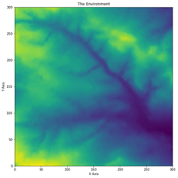
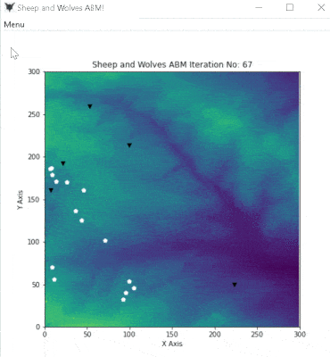
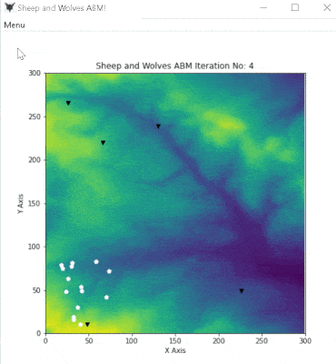
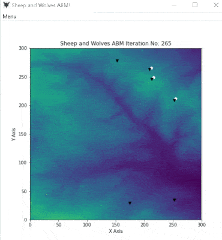

Traditionally, we have been collecting individual level
date to generate summary statistic and carry out inferential analysis. This is undoubtedly of
immense importance as it allows us to predict not only population but also
individual level behaviour (provided raw data has been collected at an individual
level). However, the individual level measures we obtain are based on the
summary statistic and may not* represent how a particular individual may act.
It might be helpful to think of this as a low-resolution image
where you can get a sense of the overall picture but not the fine details.
Agent-Based Models (ABM) on the other hand, allows us to keep track of an individual as
an individual! Thus, it allows us to analyse the risks/behaviours of an individual
more accurately and thus generate a better individual and population level model. You
can think of this as a high-resolution image where you can see the finer details!
You can
learn more about ABM from the course page .
* I am not in any way suggesting that individual level measures such as relative risk/odds ratio
obtained from traditional research methods are not "good enough"! Such methods have a proven track record
and in any case, do not need any "approval" from me! Disagree with the statements? Let me know!
B The Sheep and Wolves ABM!
This is a simple ABM model containing a herd of sheep and a pack of wolves! This project
was undertaken as part of the Programming for Social Science course of my MSc/PhD at the
University of Leeds between September and October 2020. The main idea behind this project was to
introduce student to programming by creating a model where agents
(representing the animals) can interact with each other and the environment in which they are in.
B.1 What programming language/software was used to build this?
This was coded in Python 3 using Spyder. Extensive use of f-string is applied, and
thus python 3.6+ is a requirement.
Environment: Essentially a 300x300 Euclidean plane.
Animals
Sheep
Wolves
B.3.1 The Environment
The environment is a 2D map that is generated from reading the raster data from
in.txt. The environment
will change its colour as its data gets altered by the animals (see Fig 3), for example the sheep eating grass from the environment
or wolves eating 4/5 of the sheep (store) and 1/5 (sheep store) getting deposited in the environment. This is explained in the
sections below.

Fig 1: The Environment
B.3.2 Animals
Animals consist of sheep and wolves. The animals have access to each other's location
in the environment and know how far apart they are by calculating the Euclidean distance
using their Cartesian coordinates (x,y) in the 2D environment via the Pythagorean theorem.
They also have a store value which represents either their energy level
or food stores/resources depending on the context. Their initial store values are randomly
assigned. Whether the store represents food resources or energy is explained in the sections
below.
The animals can move around the environment, identify
the closest animal if one is found within a certain minimum distance, get close to it
and interact with it if they are within a certain action distance.
The interaction can be an attempt to breed (either successful or failed),
share resources with each other (for sheep), fight with each other (for wolves).
During movements, boundary conditions are set up as such that the animals do not go
beyond the 300x300 limits of the environment. If the animals are not trying to run
towards (or exclusively for the sheep, away from the wolves), the speed of the normal
movement is based on their current store value and random probability. During normal movement, a
certain amount of store value is deducted as energy lost during movement.
If the animals of the same species are within a certain action distance, and if both of them have
a certain energy level, they will attempt to breed. Whether breeding will be successful or not
depends on random probability. However, a breeding attempt will cost both animals energy,
which is half of the average of both animals.

Fig 2: The Animals (White = Sheep, Black = Wolves).
B.3.2.1 The Sheep
A. The first action of a sheep is to check if any wolves are nearby within
a certain minimum distance. This minimum distance can be thought of as the range of
vision of the sheep. This is set up by default as half of the range of vision of
the wolves (as the wolves are predators they should have a higher range of vision).
If a sheep finds one or more close wolves within its proximity (minimum distance),
it runs away from the closest one. While running away, it does not eat any grass from the environment.
B. If no close wolf is found, it looks for the closest sheep provided that it has a certain
minimum store value. If it finds one or more close sheep within its proximity, it moves towards the closest one and
this time it eats while moving. This enables a herd like behaviour. If no close sheep is found, it moves randomly
and eats grass from the environment.
If a sheep finds the closest wolf and runs towards it and manages to get it within action distance,
interaction takes place.
Interaction for sheep can be an attempt at breeding or sharing resources. Both sheep will undertake
an attempt at breeding provided that the second sheep also has a certain minimum energy (store value).
The breeding success will depend on probability as mentioned earlier.
If, however, the closest sheep does not have enough energy, both sheep share their food resources (store),
and their store values become average. This is because their main aim is survival!
C. If the current sheep does not have the required minimum energy to look for other sheep, it moves
randomly and eats.
The sheep get their initial x and y coordinates
from this html file. This spawns them in a 100x100 grid. Although their initial location
could be more spread out by multiplying those values with 3, it was not done so as the sheep
likes to stay in a herd!
B.3.2.2 The Wolves
The wolves are spawned into the environment by assigning random values to their x and y
coordinates.
The wolves' actions depend on their store value or a combination of their store value
and random probability.
A. If a wolf has energy less than a certain minimum store value or if it has more than the
minimum store value and probability is between the default setup of 0.25 and 0.50, it
looks for food (sheep) within a certain minimum distance (proximity). If one or more sheep are found within
the proximity, it runs towards the closest one and once the sheep is within a certain action distance,
it eats the sheep. If no close sheep is found, it moves normally.
The condition - if it has more than the minimum store value and probability is between the default
setup of 0.25 and 0.50 - is set up because otherwise it was observed that the wolves were not chasing or interacting with
the sheep even if one or more sheep were within proximity or action distance until their energy levels dropped below minimum energy
via normal movement. Enabling this condition seems to have done two things:
The wolves now also eat the sheep if they have more than minimum energy and probability conditions are
right! This was intentional.
The wolves also seem to behave like a pack (Fig 3) where one wolf which has eaten seems to (sometimes)
chase the sheep towards other wolves. This, however, admittedly was not an intentional setup and is completely
based on random probability of another wolf being present in the line of direction of the sheep being chased!

Fig 3: Pack Behaviour?
B. If, however, a wolf has more than the minimum energy and random value is above a certain probability,
it looks for other wolves within proximity. If one more wolves are found within proximity, it moves closer to the
closest one.
Once the closest wolf is within action distance, the current sheep interacts with it. The interaction can be an attempt at
breeding or fight. The wolves will attempt to breed if the closest wolf also has energy more than the minimum energy.
Just like the sheep, the success/failure of the breeding attempt is probability based. Similarly, the breeding cost is applied
If the closest wolf's energy is below the minimum energy, they will fight, and the
winner depends on probability. The default setup is such that if the random value is > probability value, the current wolf will
win half of the store of the closest wolf and vice versa! If on the other hand, no close wolf is found, the wolf will
move normally.
C. If none of the initial conditions of A or B is met, the wolf will move normally.
B.4 Additional features of the ABM model
The model will save the environment data once it has been run to another text file. The way it's set up
currently will overwrite the previous output.
It will also save the total store value of the sheep and wolves in separate text files and will add the
values of subsequent runs of the model instead of overwriting previous values.
B.5 How to run the Model
The model can be run from the command prompt by the code python final_model.py.
The prompt will then ask you if you want to modify certain variables. There are 11 modifiable variables
that you can alter. A description of what each variable does will be provided. If you want to modify the variables,
input 'y' (lowercase and without ' '). You will still have the option to run with the default values for
individual variables if you want to do so.
If you do not want to modify any variable, input any other character and press enter. This will pop
open a GUI where you will see a Menu. Click the "Run ABM Model" button from the Menu which will initiate the model.
You will be able to see the animals in the environment interacting with each other and the environment. The sheep
are the white ones, and the wolves are the black ones!
In the cmd, a printout of the details of each iteration will be presented. The details will include the action
of each sheep, followed by the actions of each wolf! You will also see the time to process each iteration.
The model will run until all sheep are eaten by the wolves or until the number of iterations have been completed.
At the end of the model, you will be presented with the final number of sheep and wolves and their total store values and the total
time it took to run the model for the specified number of iterations.
B.6 A bit about how I debugged the model
The first thing was to ensure random seed was enabled, and random shuffling of animals are commented out.
Secondly, once you run the model, it will be clear to you that this presents with extensive details of the actions of each sheep and wolf.
This allows me to easily debug the model by searching for keywords and ensure the model is working as intended. To aid with the
debugging, I diverted the output from the console to a text file which allowed me to quick search for keywords using
Notepad++. Diverting the output also enabled me to compare output from an earlier stable version to the latest one, for example,
when I was moving some of the functions to the final_agent_framework.py module from final_model.py to adopt a more
object-oriented approach. Outputs were compared by both importing the outputs
in two lists and by comparing if the contents of the lists are the same using the Equality == operator and also by the cmd
file compare command: fc /lb2. The codes to divert are commented out in the final model because if these are active the model will not
run from cmd. However, if you wish to enable and divert the output, please use an IDE such as Spyder, which will ensure you
are presented with the prompts and run the model while diverting the output to the text file.
B.7 Knowen issue(s)
1. When the sheep are running away from the wolves in a north/north-east direction, the wolves chasing the sheep do not seem to be able to catch
up with the sheep until the sheep reaches the edge of the environment (Fig 4). This is not observed when the sheep flee in other directions.

Fig 4: Wolves unable to catch the sheep!
2. The final statements such as (the final number of sheep and wolves and their total store values and the total time it took
to run the model for the specified number of iterations), do not appear until the GUI is closed. Moreover, the statements appear only when
the code is run from Spyder and not in cmd.